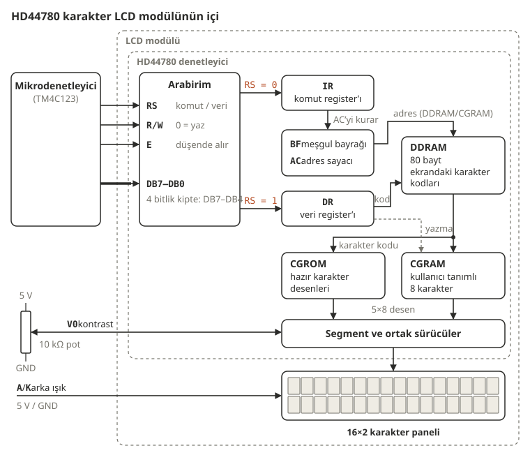
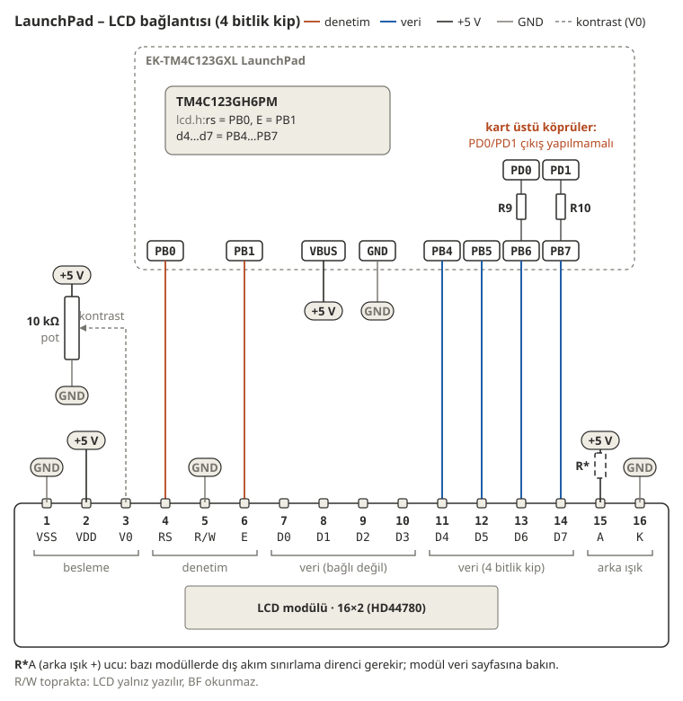
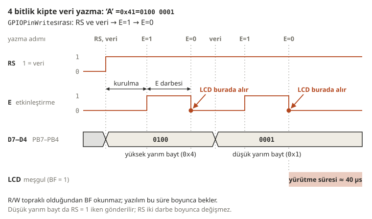
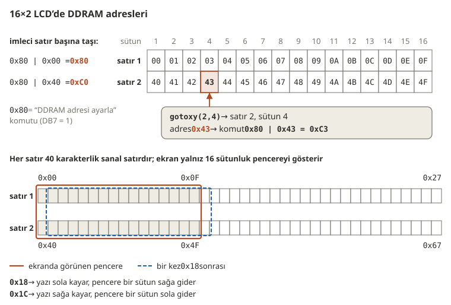
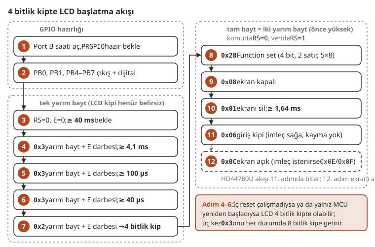

Karakter LCD (HD44780)
16×2 karakter LCD, bir mikrodenetleyicinin kullanıcıya metin göstermesinin en ucuz yoludur. Modülün içinde HD44780 uyumlu bir denetleyici bulunur. Bu denetleyiciye birkaç GPIO pini üzerinden komut ve karakter kodu gönderilir. Bu notta LCD'yi LaunchPad'in Port B'sine 6 pinle bağlayıp 4 bitlik kipte süreceğiz: yazma döngüsü, komut seti, DDRAM adresleri, başlatma sırası, register düzeyinde ve TivaWare ile sürücüler, sayı ve özel karakter yazdırma. GPIO register'ları ve adres maskeleme GPIO notunda anlatıldığı için burada yalnızca kullanılıyor.
Bu notun sonunda öğrenci:
- LCD modülünün içindeki HD44780 denetleyicisinin yapısını (komut register'ı IR, veri register'ı DR, meşgul bayrağı BF, adres sayacı AC, DDRAM, CGROM, CGRAM) açıklayabilir; RS ve R/W'nin dört birleşimini sayabilir.
- 16×2 LCD'yi LaunchPad'e 6 GPIO pini ile (PB0 = RS, PB1 = E, PB4–PB7 = D4–D7, R/W = GND) bağlayabilir; 3,3 V / 5 V seviyelerini, PB0/PB1'in 5 V'a dayanıklı olmadığını ve PB6/PB7–PD0/PD1 köprüsünü göz önüne alabilir.
- Bir baytı 4 bitlik kipte iki yarım bayt hâlinde yazabilir: veriyi koy → RS → E = 1 → E = 0 (düşen kenarda alınır) → yürütme süresi kadar bekle.
- Komut baytlarını bit alanlarından kurabilir (0x28, 0x06, 0x0C, 0x01, 0x80 | adres, 0x40 | adres…) ve satır/sütundan DDRAM adresini hesaplayabilir.
- LCD'yi 12 adımlı 4 bitlik başlatma sırasıyla başlatabilir; üç kez 0x3 gönderilmesinin ve 0x2 yarım baytının nedenini açıklayabilir;
SysCtlDelayparametresini verilen saat ve süre için hesaplayabilir. - Aynı sürücüyü register erişimiyle ve TivaWare fonksiyonlarıyla yazabilir; metin, tamsayı ve CGRAM'a yüklenmiş özel karakterleri ekranda gösterebilir.
1. LCD modülü ve HD44780
Karakter LCD modülü yalnızca bir cam panel değildir. Kartın arkasında, paneli satır ve sütun sürücüleriyle tarayan, kendi belleği ve komut çözücüsü olan bir denetleyici bulunur. Dersin LCD föyündeki tanımıyla modül, kendine ait bir mikroişlemcisi, RAM ve ROM'ları olan bir cihazdır. Hitachi'nin HD44780U yongası bu işin standardı hâline gelmiştir. Farklı üreticilerin modülleri de aynı komut setini ve erişim protokolünü kullanır. Mikrodenetleyici yalnızca komut ve karakter kodlarını gönderir. Panelin taranmasını ve karakterin noktalara çevrilmesini denetleyici kendisi yapar.

IR, DR, BF ve AC
- IR (instruction register, komut register'ı): RS = 0 iken yazılan bayt buraya gelir ve bir komut olarak çözülür: ekranı sil, imleci taşı, kipi ayarla gibi.
- DR (data register, veri register'ı): RS = 1 iken yazılan bayt buraya gelir. Denetleyici bu baytı AC'nin gösterdiği DDRAM (ya da CGRAM) adresine yazar ve AC'yi giriş kipine göre bir artırır ya da azaltır.
- BF (busy flag, meşgul bayrağı): Denetleyici bir komutu yürütürken BF = 1'dir ve yeni komut kabul edilmez. BF yalnızca okuma ile (RS = 0, R/W = 1) DB7'den öğrenilebilir. Dersteki bağlantıda R/W toprakta olduğu için BF okunmaz, her komuttan sonra en kötü durum süresi kadar beklenir (Bölüm 9).
- AC (address counter, adres sayacı): Bir sonraki karakterin yazılacağı DDRAM ya da CGRAM adresidir. DDRAM ve CGRAM adres komutları AC'yi doğrudan ayarlar. Ekrandaki imleç AC'nin gösterdiği yerde durur.
DDRAM, CGROM, CGRAM
- DDRAM (Display Data RAM): Ekranda gösterilecek karakter kodlarını tutan 80 baytlık bellek. 16×2 ekran bunu her biri 40 karakterlik iki sanal satır olarak kullanır. Ekranda her satırın 16 karakterlik bir penceresi görünür (Bölüm 6).
- CGROM (Character Generator ROM): Karakter kodunu 5×8 noktalık desene çeviren hazır tablo. Föye göre 192 karakter içerir (HD44780U'nun A00 tablosunda 208 adet 5×8 ve 32 adet 5×10 desen vardır): ASCII karakterleri kendi kodlarıyla seçilir ('A' = 0x41), geri kalanı Japon kana ve Yunan harfleri gibi özel karakterlerdir. Türkçe ç, ğ, ı, ö, ş, ü harfleri tabloda yoksa CGRAM ile tanımlanır.
- CGRAM (Character Generator RAM): Kullanıcının tanımladığı 8 karakterlik desen belleği. Bu karakterler 0–7 kodlarıyla gösterilir (Bölüm 8.5). Desenler RAM'de durduğu için LCD'nin beslemesi kesilince silinir. Her açılışta yeniden yüklenmeleri gerekir.
2. Pinler
16 pinin görevleri
Modüllerin çoğunda tek sıra 16 pin vardır. İlk 14 pin denetleyicinin arayüzüdür, 15 ve 16 arka ışığın LED'ini besler (dersin LCD föyü, Tablo 2). Sıra, arka ışıklı yaygın modüllerdeki sıradır. Arka ışık pinlerinin yeri ve gereken akım sınırlama direnci modülden modüle değişebilir, kendi modülünüzün veri sayfasına bakın.
| No | Ad | Görev | LaunchPad bağlantısı |
|---|---|---|---|
| 1 | VSS | Toprak | GND |
| 2 | VDD | +5 V besleme | VBUS (J3.01, 5,0 V) |
| 3 | V0 (VEE) | Kontrast gerilimi; değeri en çok VDD olabilir | 10 kΩ potun orta ucu (uçlar VDD ve GND) |
| 4 | RS | Register seçimi: 0 = komut (IR), 1 = veri (DR) | PB0 |
| 5 | R/W | 0 = yazma, 1 = okuma | GND (yalnız yazma) |
| 6 | E | Enable: veri E'nin düşen kenarında alınır | PB1 |
| 7–10 | DB0–DB3 | Veri yolunun düşük yarısı (yalnız 8 bitlik kipte) | Boş |
| 11–14 | DB4–DB7 | Veri yolunun yüksek yarısı; DB7 okumada BF'dir | PB4–PB7 |
| 15 | A (LED+) | Arka ışık anodu | +5 V (modülde direnç yoksa seri dirençle) |
| 16 | K (LED−) | Arka ışık katodu | GND |
Dersin LCD föyündeki Tablo 2'de 15. ve 16. pinin ikisi de "LEDA" diye yazılmıştır. 16. pin katottur (LEDK, "Işık 0V").
RS ve R/W
RS ve R/W birlikte dört işlemden birini seçer (Experiment 9 föyü ve dersin LCD föyü):
| RS | R/W | İşlem | DB7–DB0 |
|---|---|---|---|
| 0 | 0 | Komut yaz (IR) | MCU → LCD: komut baytı |
| 0 | 1 | Meşgul bayrağını ve adres sayacını oku | LCD → MCU: DB7 = BF, DB6–DB0 = AC |
| 1 | 0 | Veri yaz (DR → DDRAM/CGRAM) | MCU → LCD: karakter kodu ya da desen satırı |
| 1 | 1 | Veri oku (DDRAM/CGRAM → DR) | LCD → MCU: AC'deki bayt |
R/W = 1 iken veri hattını LCD sürer. Bu yüzden okuma yapılacaksa MCU'nun veri pinleri önce giriş yapılmalıdır. Aksi hâlde iki çıkış aynı hatta birbirine karşı sürer.
3. LaunchPad bağlantısı
Dersteki kodların hepsi aynı bağlantıyı kullanır (lcd.h dosyalarındaki tanımlar): PB0 = RS, PB1 = E, PB4–PB7 = D4–D7, R/W toprakta. Yalnız drive_lcd2 RS/R/W/E'yi Port E'ye (PE1/PE2/PE3) taşır (8.3).

Neden 4 bit, neden R/W toprakta
- 4 bit: HD44780, DL = 0 seçilirse bir baytı DB7–DB4 üzerinden iki yarım bayt (nibble) hâlinde alır. Böylece 8 bitlik bağlantının 10 pini (R/W toprakta) yerine 6 pin yeter. Bedeli, her baytın iki E darbesi sürmesidir (föy: "iletişim süresini iki kat uzatır"). Bu süre zaten komut yürütme süresinin (≈ 40 µs) yanında çok kısadır.
- D4–D7 → PB4–PB7: Yüksek yarım bayt baytın 7–4. bitlerinde durur ve pinlerin bit numaralarıyla örtüşür. Bu sayede
c & 0xF0doğrudan pinlere yazılır, düşük yarım bayt için de yalnızca(c & 0x0F) << 4kaydırması gerekir. - R/W toprakta: LCD her zaman yazma kipindedir ve veri hattını hiçbir zaman sürmez. Bir pin kazanılır, hat çakışması ve 5 V'un MCU'ya geri gelmesi riski de ortadan kalkar. Bedeli: BF okunamaz, her komuttan sonra sabit süre beklenir. R/W boşta bırakılmamalıdır: HD44780U'da R/W'de (ve RS ile DB0–DB7'de) iç pull-up vardır, E'de yoktur (veri sayfası s. 51, 54). Boşta kalan R/W 1 okunur, LCD okuma kipinde kalır ve veri hattını sürer. Uyumlu klonlarda pull-up olmayabilir, o zaman seviye belirsizdir.
3,3 V ve 5 V
- Besleme: Yaygın modüller 5 V ile beslenir. Experiment 9'daki gibi VDD, LaunchPad'in USB'den gelen 5 V'luk VBUS ucuna bağlanır.
- MCU → LCD: TM4C123'ün GPIO çıkışı 3,3 V'luk bir sinyaldir. Garanti edilen yüksek seviye çıkış gerilimi VOH en az 2,4 V'tur (datasheet Tablo 24-6, s. 1360). HD44780U'nun giriş yüksek eşiği VIH1 = 2,2 V'tur (VCC 4,5–5,5 V, veri sayfası s. 51). TM4C'nin VOH ≥ 2,4 V'u ile 0,2 V pay kalır. Uyumlu denetleyicilerde bu değer daha yüksek olabilir, kullandığınız modülün veri sayfasına bakın.
- LCD → MCU: R/W = 1 yapılırsa LCD veri hattını 5 V seviyesine kadar sürer. TM4C123'ün GPIO'ları giriş olarak ayarlıyken ve VDD varken 5 V'a dayanıklıdır, ancak PD4, PD5, PB0 ve PB1 hariç: bu dört pin 3,6 V ile sınırlıdır (datasheet §10.1, s. 649 ve §24.13.1, s. 1385). Dersteki bağlantıda PB0/PB1 RS ve E'dir. Bu iki hattı LCD hiçbir zaman sürmediği için sorun yoktur. Ama veri hattı PB0/PB1'den geçen bir bağlantıda (ör. Experiment 9'un 8 bitlik bağlantısı, D0 = PB0, D1 = PB1) R/W = 1 ile okuma yapmak bu pinlere 5 V uygular (Bölüm 10).
PB6/PB7 ve PD0/PD1 köprüsü
EK-TM4C123GXL kartında PB6 ile PD0, R9 üzerinden; PB7 ile PD1, R10 üzerinden birbirine bağlıdır (0 Ω'luk dirençler, MSP430 LaunchPad uyumluluğu için; kullanıcı kılavuzu SPMU296, Tablo 2-4 ve 2-5, s. 10). D6 ve D7'yi süren PB6/PB7'nin seviyesi PD0/PD1'de de görünür. Açılışta PD0/PD1 giriştir, bu yüzden sorun çıkmaz. Ama aynı programda PD0 ya da PD1 çıkış yapılırsa (ör. Experiment 9'daki gibi RS'yi PD1'e bağlamak, ya da PD0/PD1'i SSI/I2C/PWM işlevine almak) iki çıkış birbirine karşı sürer. Bu durumda ya PD0/PD1 kullanılmaz ya da R9/R10 sökülür.
4. Yazma döngüsü
LCD'ye bir bayt yazmak, E hattına bir darbe vermektir. Föyde "0-1-0 darbesi" diye geçer. Sıra şöyledir:
- Veriyi D7–D4 (8 bitlikte D7–D0) hatlarına koy.
- RS'yi ayarla: komut için 0, karakter için 1. R/W zaten 0'dır. Ders kodlarının bir kısmı önce RS'yi (
hafta05_lcdsablonogr2), bir kısmı önce veriyi (drive_lcd1) yazar. İkisi de E yükselmeden önce bittiği için fark etmez. - E = 1 yap. RS ve veri E yükselmeden önce kararlı olmalıdır (kurulma süresi).
- E = 0 yap. LCD hatlardaki değeri E'nin düşen kenarında alır. E'nin 1'de kalma süresi veri sayfasındaki en küçük E darbe genişliğinden kısa olmamalıdır.
- Komutun yürütme süresi kadar bekle: çoğu komut ve karakter yazma için ≈ 40 µs, silme ve başa dönme için ≈ 1,6 ms. Bu süre içinde gönderilen bayt kaybolabilir.

4 bitlik kipte yarım baytlar
4 bitlik kipte her bayt önce yüksek, sonra düşük yarım bayt olarak gider. LCD iki yarım baytı birleştirip tek bir bayt olarak işler. 'A' = 0x41 = 0100 0001 için:
| Darbe | İfade | PB7–PB4 (D7–D4) |
|---|---|---|
| 1. E darbesi | 0x41 & 0xF0 = 0x40 | 0100 |
| 2. E darbesi | (0x41 & 0x0F) << 4 = 0x10 | 0001 |
LCD her E darbesinde sayacını bir ilerletir ve iki darbede bir bayt tamamlar. Bu sayaç yalnızca darbeleri sayar. Bir yarım bayt eksik ya da fazla giderse sonraki bütün baytlar yarım bayt kayar: her baytın düşük yarısı bir sonrakinin yüksek yarısıyla birleşir ve ekrana anlamsız şeyler gelir. Sıra ters gönderilirse 'A' (0x41) yerine 0x14 kodlu karakter yazılır. Başlatmadaki 0x2 yarım baytı bu yüzden önemlidir (8.3).
Maskeli DATA ile yazma
Yalnız PB4–PB7'yi değiştirip PB0 (RS) ve PB1'e (E) dokunmamak için GPIODATA'nın adres maskelemesi kullanılır: adres = taban + (maske << 2). Port B'nin APB tabanı 0x40005000'dir (inc/hw_memmap.h: GPIO_PORTB_BASE).
| Hedef pinler | Maske | Adres | C ifadesi |
|---|---|---|---|
| PB0 (RS) | 0x01 | 0x40005004 | GPIO_PORTB_DATA_BITS_R[0x01] |
| PB1 (E) | 0x02 | 0x40005008 | GPIO_PORTB_DATA_BITS_R[0x02] |
| PB4–PB7 (D4–D7) | 0xF0 | 0x400053C0 | GPIO_PORTB_DATA_BITS_R[0xF0] |
| Bütün port | 0xFF | 0x400053FC | GPIO_PORTB_DATA_R |
inc/tm4c123gh6pm.h, GPIO_PORTB_DATA_BITS_R'yi ((volatile uint32_t *)0x40005000) olarak tanımlar. Dizinin her elemanı 4 bayt olduğundan [0xF0] elemanı 0x40005000 + 0xF0·4 = 0x400053C0 adresidir. Aynı adres elle de yazılabilir: (*((volatile uint32_t *)(0x40005000 + (0xF0 << 2)))). Bu adrese 0x41 yazılırsa yalnız bit7–4 değişir, PB0 ve PB1 olduğu gibi kalır. TivaWare'deki GPIOPinWrite(GPIO_PORTB_BASE, 0xF0, d) çağrısı da tam olarak budur.
5. Komut seti
Komut tablosu
Komut baytının en soldaki 1 biti komutun türünü belirler, sağındaki bitler seçeneklerdir. Tablo dersin LCD föyündeki Tablo 4 ve 5'in, Experiment 9 föyündeki komut listesinin ve HD44780U veri sayfasının birleşimidir. "*" önemsiz bittir. Süreler föydendir (HD44780U değerleri için 7.3).
| Komut | DB7–DB0 | Değer | Bitler | Süre |
|---|---|---|---|---|
| Ekranı sil (clear) | 0000 0001 | 0x01 | DDRAM'ı boşlukla doldurur, AC = 0, I/D = 1 | 1,64 ms |
| Başa dön (return home) | 0000 001* | 0x02 | AC = 0, kaydırılmış ekranı geri alır; DDRAM değişmez | 1,64 ms |
| Giriş kipi (entry mode) | 0000 01 I/D S | 0x04–0x07 | I/D: 1 = AC artar (imleç sağa), 0 = azalır. S: 1 = her yazmada ekran kayar | 40 µs |
| Ekran aç/kapa (display control) | 0000 1 D C B | 0x08–0x0F | D: ekran, C: imleç (alt çizgi), B: imleç yanıp sönmesi | 40 µs |
| İmleç/ekran kaydır (shift) | 0001 S/C R/L ** | 0x10–0x1F | S/C: 1 = ekranı (yazıyı), 0 = imleci kaydır. R/L: 1 = sağa, 0 = sola | 40 µs |
| Fonksiyon ayarı (function set) | 001 DL N F ** | 0x20–0x3F | DL: 1 = 8 bit, 0 = 4 bit. N: 1 = 2 satır, 0 = 1 satır. F: 1 = 5×10, 0 = 5×8 nokta | 40 µs |
| CGRAM adresi | 01 A5–A0 | 0x40 | adres | AC'yi CGRAM'a yöneltir; adres = karakter no × 8 + satır | 40 µs |
| DDRAM adresi | 1 A6–A0 | 0x80 | adres | AC'yi DDRAM'a yöneltir: imleci konumlar | 40 µs |
| BF ve AC oku (RS = 0, R/W = 1) | BF AC6–AC0 | — | DB7 = meşgul bayrağı | 0 |
| Veri yaz (RS = 1) | karakter kodu | — | AC'deki DDRAM/CGRAM adresine yazar | 40 µs |
Föy F bitini "5x7 / 5x10 pixel" diye verir. 5×8'lik karakter kutusunun alt satırı imlece ayrıldığı için 5×7 ile 5×8 aynı yazı tipidir. Föyün başa dön satırındaki 1,64 ms HD44780U veri sayfasında 1,52 ms'dir. Experiment 9 föyü her komutun ardından 39 µs bekler.
Sık kullanılan değerler
| Değer | Anlamı | Bit açılımı |
|---|---|---|
0x28 | 4 bit, 2 satır, 5×8 | 001 DL=0 N=1 F=0 00 |
0x38 | 8 bit, 2 satır, 5×8 | 001 DL=1 N=1 F=0 00 |
0x06 | İmleç sağa, ekran kaymaz | 0000 01 I/D=1 S=0 |
0x08 | Ekran kapalı (DDRAM korunur) | 0000 1 D=0 C=0 B=0 |
0x0C | Ekran açık, imleç yok | 0000 1 D=1 C=0 B=0 |
0x0E | Ekran açık, imleç alt çizgi | 0000 1 D=1 C=1 B=0 |
0x0F | Ekran açık, imleç yanıp söner | 0000 1 D=1 C=1 B=1 |
0x01 | Ekranı sil, imleç başa | — |
0x80 / 0xC0 | 1. / 2. satırın başı | 1 + adres 0x00 / 0x40 |
0x18 / 0x1C | Yazı sola / sağa kayar (pencere bir sütun sağa / sola gider) | 0001 S/C=1 R/L=0 / 1 |
0x10 / 0x14 | İmleci sola / sağa taşı | 0001 S/C=0 R/L=0 / 1 |
Giriş kipinde S'ye dikkat: 0x07'de (I/D = 1, S = 1) her karakter yazıldığında bütün ekran bir sütun kayar. İmleç yerinde duruyor, yazı her harfte bir sütun sola kayıyormuş gibi görünür. Metin yazmak için 0x06 kullanılır.
6. DDRAM adresleri ve imleç
16×2 ekranda 1. satırın sütunları DDRAM'ın 0x00–0x0F, 2. satırınkiler 0x40–0x4F adresleridir. İkinci satır 0x10'dan değil 0x40'tan başlar. İmleci bir yere götürmek için "DDRAM adresi" komutu gönderilir: komut = 0x80 | adres. Bu yüzden satır başları 0x80 ve 0xC0'dır.

Satır 1–2 ve sütun 1–16 (1'den sayarak) için:
adres = (satir == 1 ? 0x00 : 0x40) + (sutun - 1);
komut = 0x80 | adres; // (1,1) -> 0x80, (1,4) -> 0x83, (2,4) -> 0x43 -> 0xC3Dersin föyündeki ADuC841 örneği birinci satırın 4. sütununa 0x83, ikinci satırın 2. sütununa 0xC1 ile gider. Dersteki lcdgotoxy ve Lcd_Goto fonksiyonları aynı hesabı 0x80+((y-1)%16) ve 0xC0+((y-1)%16) ile yapar. %16, 16'dan büyük sütunu satırın başına sardırır. drive_lcd2'deki satir_sutun ise 1. satır için 0x7F + sutun kullanır. Bu, 0x80 + (sutun − 1)'in kısaltılmış yazılışıdır.
- Yazılan her karakter AC'yi bir artırır (I/D = 1). 16. sütundan sonra yazılanlar ikinci satıra geçmez, 1. satırın görünmeyen 0x10–0x27 bölgesine gider. Föyün örneğinde 40 karakterlik bir dizinin yalnızca ilk 16'sı görünür.
- İkinci satıra geçmek için
0xC0komutu açıkça gönderilir. - Kaydırma komutlarında kayan şey yazıdır:
0x18ile bütün satırların yazısı bir sütun sola kayar, yani pencere sanal satır üzerinde bir sütun sağa gider.0x1Ctersini yapar. Föydeki "ekran bir karakter sağa kayacak ve 9 karakteri gizlenecektir" ifadesi pencerenin sağa kaymasını, yani yazının sola kaymasını anlatır. DDRAM içeriği ve AC değişmez. hafta05_lcdsablonogr1'in başlığındaki yorumlar (1,5 → 85,2,7 → c7) sütunu 0'dan sayar.hafta05_lcdsablonogr2'dekilcdgotoxyise 1'den sayar: (1,5) → 0x84. Sürücüyü yazarken hangisinin kullanıldığına karar verip tutarlı olun.
7. Başlatma
HD44780U beslemesi geldiğinde iç sıfırlama devresiyle kendini sıfırlar ve 8 bitlik kipte, tek satırlı ve ekranı kapalı olarak açılır. Bu iç sıfırlama ancak besleme veri sayfasındaki koşullarla yükselirse çalışır. Ayrıca LaunchPad'in RESET düğmesine basıldığında yalnız MCU yeniden başlar, LCD'nin beslemesi kesilmez ve LCD önceki programın bıraktığı kipte (çoğu zaman 4 bitte) kalır. Bu yüzden sürücü LCD'nin durumunu bilmediğini varsayar ve onu yazılımla bilinen bir kipe getirir. HD44780U veri sayfası bunun için "talimatla başlatma" (initialization by instruction) akışını verir. Aşağıdaki 12 adım bu akışın 4 bitlik sürümüdür. Veri sayfasının akışı 11. adımda biter, 12. adım ekranı açar. Bu not için hazırlanan 4 bitlik sürücüler ve Şekil 5 aynı numaraları kullanır. Adımlar üç grupta toplanır: GPIO hazırlığı (1–2), tek yarım bayt (LCD kipi henüz belirsiz, 3–7) ve tam bayt = iki yarım bayt, önce yüksek (8–12).
12 adım
- Port B saati: RCGCGPIO bit1 = 1, PRGPIO bit1 = 1 olana kadar bekle (
SysCtlPeripheralEnable+SysCtlPeripheralReady). - Pinler: PB0, PB1, PB4–PB7 çıkış ve dijital (GPIODIR, GPIODEN = 0xF3). Bütün port (0xFF) değil, yalnızca kullanılan pinler ayarlanır.
- RS = 0, E = 0; beslemeden sonra ≥ 40 ms bekle.
- D7–D4 = 0011 (0x3), E darbesi; ≥ 4,1 ms bekle.
- 0x3 ikinci kez, E darbesi; ≥ 100 µs bekle.
- 0x3 üçüncü kez, E darbesi; ≥ 40 µs bekle (yürütme süresi kadar; veri sayfasının akışında açık bir değer yok).
- 0x2 tek yarım bayt: 4 bitlik kipe geçiş. Bu yarım bayt 8 bitlik kipte "function set, DL = 0" olarak yorumlanır. DB3–DB0 boştadır, HD44780U'da pull-up ile 1 okunur: LCD
0x2Fgörür (N = 1, F = 1). - Function set 0x28 (DL = 0, N = 1, F = 0). N ve F'yi düzeltir. Veri sayfasına göre satır sayısı ve yazı tipi bu adımdan sonra değiştirilemez. Bundan sonra her bayt iki yarım bayt olarak gider.
- Ekran kapalı 0x08.
- Ekranı sil 0x01; ≥ 1,64 ms bekle.
- Giriş kipi 0x06 (I/D = 1, S = 0).
- Ekran açık 0x0C (imleç istenirse 0x0E, yanıp sönen imleç için 0x0F).

Neden üç kez 0x3?
İç sıfırlama çalıştıysa LCD 8 bitlik kiptedir. Çalışmadıysa ya da yalnız MCU yeniden başladıysa LCD 4 bitlik kipte olabilir ve yarım bayt sayacının nerede durduğu da bilinmez. Böylece üç durum çıkar: (a) 8 bitlik kip, (b) 4 bitlik kip, sayaç başta, (c) 4 bitlik kip, sayaç ortada (bir yarım bayt bekliyor). 0x3 yarım baytı 8 bitlik kipte 0x3? = "function set, DL = 1" demektir:
| Başlangıç | 1. 0x3 | 2. 0x3 | 3. 0x3 |
|---|---|---|---|
| (a) 8 bit | 8 bit kalır | 8 bit kalır | 8 bit kalır |
| (b) 4 bit, sayaç başta | yüksek yarım bayt | 0x33 → 8 bit | 8 bit kalır |
| (c) 4 bit, sayaç ortada | bekleyen yarımla birleşir: 0x?3 (herhangi bir komut) | yüksek yarım bayt | 0x33 → 8 bit |
Her durumda üçüncü 0x3'ten sonra LCD kesin olarak 8 bitlik kiptedir. (c)'deki ilk birleşik bayt bekleyen yarım bayt 0 ise 0x03, yani başa dönme (1,52 ms) olur. Bu da ilk beklemenin uzun (≥ 4,1 ms) tutulmasını haklı çıkarır. Ardından gelen tek 0x2 yarım baytı, 8 bitlik kipte "function set, DL = 0" olarak çözülür ve LCD 4 bitlik kipe geçer. Bu yarım bayt atlanırsa ne olduğunu 8.3'te drive_lcd1 üzerinde göreceğiz. 0x2'den sonraki 0x28, 0x2F ile 1'e kurulan N ve F'yi istenen değere getirir.
Dersin föyü de ilk enerjiden sonra arka arkaya üç kez 30h gönderilmesini ister ve bekleme sürelerini 15 ms, 4,1 ms, 100 µs, 40 µs olarak verir.
Süreler ve kaynakları
| Bekleme | Dersin föyü | TI Experiment 9 | HD44780U veri sayfası | Bu nottaki kod |
|---|---|---|---|---|
| Beslemeden sonra (adım 3) | ≥ 15 ms | 30 ms | ≥ 15 ms (VCC 4,5 V'a çıktıktan sonra) / ≥ 40 ms (2,7 V'tan sonra) | 50 ms |
| 1. 0x3'ten sonra (4) | ≥ 4,1 ms | — | ≥ 4,1 ms | 5 ms |
| 2. 0x3'ten sonra (5) | ≥ 100 µs | — | ≥ 100 µs | 200 µs |
| Çoğu komut, karakter yazma | 40 µs | 39 µs | 37 µs | 50 µs |
| Silme, başa dönme | 1,64 ms | 1,64 ms (silme) | 1,52 ms (başa dönme) | 2 ms |
Föylerin değerleriyle veri sayfasının değerleri arasında çelişki yoktur. Föy, 5 V besleme için 15 ms'yi almıştır. Bu nottaki adım 3, beslemenin ne zaman ve nasıl yükseldiğini bilmediğimiz için büyük olanı (40 ms) esas alır. Hitachi'nin süreleri denetleyicinin 270 kHz'lik iç osilatörü içindir. Osilatör frekansı değiştikçe süreler de değişir, farklı üreticilerin uyumlu denetleyicileri (klonlar) ise başka süreler verebilir. Bu yüzden kodda bütün beklemeler en küçük değerlerin üstünde, güvenli (büyük) değerlerle yazılmıştır. Uzun beklemek yalnızca yazıyı biraz yavaşlatır, kısa beklemek ise baytları kaybettirir.
Bekleme fonksiyonu
TivaWare'in SysCtlDelay(n) fonksiyonu subs r0, #1 / bne / bx lr üçlüsünden oluşan bir döngüdür. Her turu 3 komut çevrimidir, bu yüzden süre ≈ 3·n / fsys olur (driverlib/sysctl.c). TivaWare'in kendi açıklaması bunun kesin bir zamanlama olmadığını belirtir: flaş bekleme durumları, ön getirme (prefetch) tamponu ve araya giren kesmeler süreyi uzatır. LCD için yalnızca en az süre önemli olduğundan bu sakınca yaratmaz. Verilen bir t süresi için n = t · fsys / 3, yukarı yuvarlanır:
| Süre | 16 MHz (PIOSC, saat ayarı yok) | 50 MHz (PLL, SYSDIV_4) |
|---|---|---|
| 1 µs | 6 | 17 |
| 40 µs | 214 | 667 |
| 100 µs | 534 | 1 667 |
| 1,64 ms | 8 747 | 27 334 |
| 4,1 ms | 21 867 | 68 334 |
| 40 ms | 213 334 | 666 667 |
Ters yönde, ders kodlarındaki değerler 50 MHz'te: SysCtlDelay(10) ≈ 0,6 µs, (200) ≈ 12 µs, (2000) ≈ 120 µs, (10000) ≈ 0,6 ms, (20000) ≈ 1,2 ms, (50000) ≈ 3 ms eder. Aynı sayılar 16 MHz'te 3,125 kat uzundur. Aynı kod saat değişince farklı süre verir. 8.2'deki sürücü bu yüzden µs başına sayıyı SysCtlClockGet()'ten hesaplar.
API'siz örnekte SysCtlDelay yoktur. Onun yerine volatile sayaçlı kaba bir döngü kullanılır. Süresi derleyiciye ve optimizasyon düzeyine bağlıdır, ama iç döngü 16 MHz'te 1 µs'den kısa süremeyecek kadar uzundur. Kesin bekleme için zamanlayıcı kullanılır (Zamanlayıcılar notu).
TivaWare karşılıkları
| İş | API'siz | API'li |
|---|---|---|
| 1. Port B saati | SYSCTL_RCGCGPIO_R |= 0x02;while(!(SYSCTL_PRGPIO_R & 0x02)); | SysCtlPeripheralEnable(SYSCTL_PERIPH_GPIOB);while(!SysCtlPeripheralReady(SYSCTL_PERIPH_GPIOB)); |
| 2. Çıkış + dijital | GPIO_PORTB_DIR_R |= 0xF3;GPIO_PORTB_DEN_R |= 0xF3; | GPIOPinTypeGPIOOutput(GPIO_PORTB_BASE, 0xF3); (ayrıca 2 mA, push-pull pad ayarı yapar) |
| D7–D4'e yaz | GPIO_PORTB_DATA_BITS_R[0xF0] = d; | GPIOPinWrite(GPIO_PORTB_BASE, 0xF0, d); |
| E = 1 / E = 0 | GPIO_PORTB_DATA_BITS_R[0x02] = 0x02; / = 0; | GPIOPinWrite(GPIO_PORTB_BASE, GPIO_PIN_1, GPIO_PIN_1); / …, 0); |
| Bekleme | volatile sayaçlı döngü | SysCtlDelay(n), n = t·f/3 |
GPIOPinWrite'ın üçüncü parametresi pin maskesiyle VE'lenir: E'yi 1 yapmak için 1 değil GPIO_PIN_1 (= 2) yazılır. Ders kodlarındaki GPIOPinWrite(LCDPORT, E, 0x02) bu yüzden doğrudur.
8. Örnekler
8.1, 8.2, 8.4 ve 8.5 bu not için hazırlandı ve TivaWare 2.1.4 başlıklarıyla clang ile uyarısız derlenir. 8.3 dersteki kodlardır. Hataları düzeltilmeden, uyarı kutularında gösterilir. Uyarılardaki satır numaraları ders klasöründeki özgün dosyalara göredir.
8.1 API'siz sürücü API'siz
Ders klasöründeki lcdapisiz boş bir şablondur: lcd.h'de pin tanımları ve fonksiyon adları (lcdkomut, lcdyaz, lcdgotoxy, lcdilkayarlar…) vardır, lcd.c ve main.c boştur. Aşağıdaki kod bu şablonun doldurulmuş hâli gibidir, ama tek dosyadır ve yalnız register'lar kullanılır: saat RCGCGPIO/PRGPIO ile açılır, pinler GPIODIR/GPIODEN ile ayarlanır, RS, E ve D7–D4 maskeli DATA adresleriyle birbirinden bağımsız yazılır. SysCtlClockSet çağrılmadığı için CPU açılıştaki 16 MHz'lik iç osilatörle (PIOSC) çalışır. Gecikme döngüleri bu varsayımla yazılmıştır.
// 16x2 HD44780 LCD, 4 bitlik kip, yalnız register erişimi (TivaWare yok).
// Bağlantı: PB0 = RS, PB1 = E, PB4..PB7 = D4..D7, R/W = GND.
// Saat ayarlanmıyor: CPU açılıştaki 16 MHz PIOSC ile çalışır.
#include <stdint.h>
#include "inc/tm4c123gh6pm.h"
#define LCD_RS 0x01u // PB0
#define LCD_E 0x02u // PB1
#define LCD_VERI 0xF0u // PB4..PB7 = D4..D7
// Maskeli DATA adresleri: yalnız maskedeki bitler yazılır (GPIO notu)
#define RS_R (GPIO_PORTB_DATA_BITS_R[LCD_RS]) // 0x40005004
#define E_R (GPIO_PORTB_DATA_BITS_R[LCD_E]) // 0x40005008
#define VERI_R (GPIO_PORTB_DATA_BITS_R[LCD_VERI]) // 0x400053C0
// Kaba gecikme: 16 MHz'te iç döngü 1 µs'den uzun sürer (süre derleyiciye
// bağlıdır). LCD için yalnız EN AZ süreler önemlidir; fazlası zararsızdır.
static void bekle_us(uint32_t us)
{
volatile uint32_t i;
while (us--)
for (i = 0; i < 4; i++) { }
}
static void bekle_ms(uint32_t ms)
{
while (ms--)
bekle_us(1000);
}
// d'nin üst 4 bitini D7..D4'e koy ve E darbesi ver
static void yarim_bayt(uint8_t d)
{
VERI_R = d; // maske 0xF0: yalnız PB4..PB7 değişir
E_R = LCD_E; // E = 1
bekle_us(1); // E darbe genişliği
E_R = 0; // E = 0: LCD veriyi düşen kenarda alır
}
// rs = 0: komut register'ı (IR), rs = 1: veri register'ı (DR)
static void lcd_gonder(uint8_t bayt, uint8_t rs)
{
RS_R = rs ? LCD_RS : 0; // RS, E'den önce kurulur
yarim_bayt(bayt & 0xF0); // önce yüksek yarım bayt
yarim_bayt((uint8_t)(bayt << 4)); // sonra düşük yarım bayt
bekle_us(50); // yürütme süresi (>= 40 µs)
}
void lcd_komut(uint8_t k)
{
lcd_gonder(k, 0);
if (k < 0x04) // 0x01 sil, 0x02/0x03 başa dön
bekle_ms(2); // >= 1,64 ms
}
void lcd_veri(char c) { lcd_gonder((uint8_t)c, 1); }
void lcd_yazi(const char *s) { while (*s) lcd_veri(*s++); }
void lcd_git(uint8_t satir, uint8_t sutun) // satır 1-2, sütun 1-16
{
uint8_t adres = (uint8_t)((satir == 1 ? 0x00 : 0x40) + (sutun - 1));
lcd_komut(0x80 | adres); // DDRAM adresi
}
void lcd_init(void)
{
// 1. Port B saati (RCGCGPIO bit1), PRGPIO hazır olana kadar bekle
SYSCTL_RCGCGPIO_R |= 0x02;
while ((SYSCTL_PRGPIO_R & 0x02) == 0) { }
// 2. Yalnız kullanılan pinler: çıkış ve dijital
GPIO_PORTB_DIR_R |= LCD_RS | LCD_E | LCD_VERI;
GPIO_PORTB_DEN_R |= LCD_RS | LCD_E | LCD_VERI;
// 3. RS = 0, E = 0; beslemeden sonra >= 40 ms
RS_R = 0;
E_R = 0;
bekle_ms(50);
// 4.-6. 0x3 üç kez
yarim_bayt(0x30); bekle_ms(5); // >= 4,1 ms
yarim_bayt(0x30); bekle_us(200); // >= 100 µs
yarim_bayt(0x30); bekle_us(100); // >= 40 µs
// 7. 0x2: 4 bitlik kipe geçiş (tek yarım bayt)
yarim_bayt(0x20); bekle_us(100);
// 8.-12. Artık her bayt iki yarım bayt olarak gider
lcd_komut(0x28); // 8. function set: DL=0, N=1, F=0
lcd_komut(0x08); // 9. ekran kapalı
lcd_komut(0x01); // 10. ekranı sil
lcd_komut(0x06); // 11. giriş kipi: I/D=1, S=0
lcd_komut(0x0C); // 12. ekran açık, imleç kapalı
}
int main(void)
{
lcd_init();
lcd_git(1, 1);
lcd_yazi("EEM 431 LCD");
lcd_git(2, 4);
lcd_yazi("TM4C123");
while (1) { }
}lcd_gonder baytı bayt & 0xF0 ve bayt << 4 olarak iki yarım bayta böler. Kaydırmadan sonra üst 4 bitin dışında kalan bitler maske yüzünden zaten yazılmaz. lcd_komut, yalnız uzun süren 0x01–0x03 komutlarından sonra ek olarak 2 ms bekler.
8.2 API'li sürücü API'li
Dersteki API'li kodların (8.3) düzenlenmiş hâlidir. Dersteki kodlarda komut ve karakter fonksiyonları neredeyse aynıdır, yalnızca RS farklıdır. Her yarım bayt için de aynı dört satır tekrar eder. Burada tek bir lcd_yarim_bayt() ve tek bir lcd_gonder(bayt, rs) vardır, komut ve veri fonksiyonları bunları çağırır. Pinler sürücünün içinde tanımlıdır, başlık yalnızca dışarıya açık fonksiyonları bildirir:
// lcd.h - 16x2 HD44780 LCD, 4 bitlik kip, TivaWare ile
// Bağlantı: PB0 = RS, PB1 = E, PB4..PB7 = D4..D7, R/W = GND
#ifndef LCD_H_
#define LCD_H_
#include <stdint.h>
void lcd_init(void); // 12 adımlı başlatma
void lcd_komut(uint8_t komut); // RS = 0
void lcd_veri(char c); // RS = 1
void lcd_sil(void); // 0x01
void lcd_git(uint8_t satir, uint8_t sutun); // satır 1-2, sütun 1-16
void lcd_yazi(const char *s); // '\0'a kadar
#endif// lcd.c - 16x2 HD44780 LCD sürücüsü, 4 bitlik kip, TivaWare ile
#include <stdint.h>
#include <stdbool.h>
#include "inc/hw_memmap.h"
#include "driverlib/sysctl.h"
#include "driverlib/gpio.h"
#include "lcd.h"
#define LCD_PORT GPIO_PORTB_BASE
#define LCD_RS GPIO_PIN_0 // PB0
#define LCD_E GPIO_PIN_1 // PB1
#define LCD_VERI (GPIO_PIN_4 | GPIO_PIN_5 | GPIO_PIN_6 | GPIO_PIN_7) // D4..D7
static uint32_t us_sayisi = 6; // 1 µs için SysCtlDelay sayısı (lcd_init hesaplar)
static void bekle_us(uint32_t us)
{
SysCtlDelay(us * us_sayisi); // SysCtlDelay(n): yaklaşık 3n çevrim
}
// d'nin üst 4 bitini D7..D4'e koy, E darbesi ver (düşen kenarda kilitlenir)
static void lcd_yarim_bayt(uint8_t d)
{
GPIOPinWrite(LCD_PORT, LCD_VERI, d); // yalnız PB4..PB7 değişir
GPIOPinWrite(LCD_PORT, LCD_E, LCD_E); // E = 1
bekle_us(1); // E darbe genişliği
GPIOPinWrite(LCD_PORT, LCD_E, 0); // E = 0
}
// rs = false: komut (IR), rs = true: veri (DR)
static void lcd_gonder(uint8_t bayt, bool rs)
{
GPIOPinWrite(LCD_PORT, LCD_RS, rs ? LCD_RS : 0); // RS önce kurulur
lcd_yarim_bayt(bayt & 0xF0); // yüksek yarım bayt
lcd_yarim_bayt((uint8_t)(bayt << 4)); // düşük yarım bayt
bekle_us(50); // yürütme (>= 40 µs)
}
void lcd_komut(uint8_t komut)
{
lcd_gonder(komut, false);
if (komut < 0x04) // 0x01 sil, 0x02/0x03 başa dön
bekle_us(2000); // >= 1,64 ms
}
void lcd_veri(char c) { lcd_gonder((uint8_t)c, true); }
void lcd_sil(void) { lcd_komut(0x01); }
void lcd_yazi(const char *s) { while (*s) lcd_veri(*s++); }
void lcd_git(uint8_t satir, uint8_t sutun)
{
uint8_t adres = (uint8_t)((satir == 1 ? 0x00 : 0x40) + (sutun - 1));
lcd_komut(0x80 | adres); // DDRAM adresini ayarla
}
void lcd_init(void)
{
// 1. Port B saati, hazır olana kadar bekle
SysCtlPeripheralEnable(SYSCTL_PERIPH_GPIOB);
while (!SysCtlPeripheralReady(SYSCTL_PERIPH_GPIOB)) { }
us_sayisi = (SysCtlClockGet() + 2999999) / 3000000; // yukarı yuvarla: 50 MHz -> 17
// 2. Yalnız kullanılan pinler çıkış ve dijital
GPIOPinTypeGPIOOutput(LCD_PORT, LCD_RS | LCD_E | LCD_VERI);
// 3. RS = 0, E = 0; beslemeden sonra >= 40 ms
GPIOPinWrite(LCD_PORT, LCD_RS | LCD_E, 0);
bekle_us(50000);
// 4.-6. 0x3 üç kez: LCD hangi kipte olursa olsun 8 bit kipe gelir
lcd_yarim_bayt(0x30); bekle_us(5000); // >= 4,1 ms
lcd_yarim_bayt(0x30); bekle_us(200); // >= 100 µs
lcd_yarim_bayt(0x30); bekle_us(100); // >= 40 µs
// 7. 0x2: 4 bitlik kipe geçiş
lcd_yarim_bayt(0x20); bekle_us(100);
// 8.-12.
lcd_komut(0x28); // 8. function set: DL=0 (4 bit), N=1 (2 satır), F=0 (5x8)
lcd_komut(0x08); // 9. ekran kapalı
lcd_komut(0x01); // 10. ekranı sil
lcd_komut(0x06); // 11. giriş kipi: imleç sağa, ekran kaymaz
lcd_komut(0x0C); // 12. ekran açık, imleç kapalı (imleç için 0x0E/0x0F)
}// main.c - lcd.c sürücüsünü kullanır
#include <stdint.h>
#include <stdbool.h>
#include "driverlib/sysctl.h"
#include "lcd.h"
int main(void)
{
// 400 MHz PLL / 2 / 4 = 50 MHz
SysCtlClockSet(SYSCTL_SYSDIV_4 | SYSCTL_USE_PLL | SYSCTL_XTAL_16MHZ | SYSCTL_OSC_MAIN);
lcd_init(); // saat ayarından SONRA: gecikmeler saate göre hesaplanır
lcd_git(1, 1);
lcd_yazi("EEM 431 LCD");
lcd_git(2, 4);
lcd_yazi("TM4C123GH6PM");
while (1) { }
}- Saatten bağımsız bekleme:
us_sayisi,SysCtlClockGet()'ten yukarı yuvarlanarak hesaplanır (50 MHz → 17, 16 MHz → 6). Bu yüzdenlcd_init,SysCtlClockSet'ten sonra çağrılmalıdır. - SysCtlPeripheralReady ile PRGPIO beklenir. Yalnız kullanılan pinler (
LCD_RS | LCD_E | LCD_VERI= 0xF3) ayarlanır. lcd_yaziconst char *alır. Böylece dizgi sabitleri uyarısız verilebilir.
8.3 Dersteki kodlar ve hataları
hafta05_lcdsablonogr2 API'li
Derste kullanılan şablonun çalışan sürümüdür. Pin tanımları lcd.h'dedir (rs = PB0, E = PB1, d4–d7 = PB4–PB7). Başlatma 3 × 0x30, ardından tek 0x20 yarım baytı ve dört komut gönderir:
void otuzhexgonder()
{
SysCtlDelay(50000);
GPIOPinWrite(LCDPORT, d4|d5|d6|d7, 0x30);
GPIOPinWrite(LCDPORT, E, 0x02); // rs=0
SysCtlDelay(200);
GPIOPinWrite(LCDPORT, E, 0x00); // rs=0
}
void lcdilkayarlar(void)
{
SysCtlPeripheralEnable(SYSCTL_PERIPH_GPIOB); // portb aktif
GPIOPinTypeGPIOOutput(LCDPORT, 0xFF); // butun pinler output
GPIOPinWrite(LCDPORT, rs, 0x00); // rs=0
otuzhexgonder();
otuzhexgonder();
otuzhexgonder();
SysCtlDelay(50000);
GPIOPinWrite(LCDPORT, d4 | d5 | d6 | d7, 0x20 );
GPIOPinWrite(LCDPORT, E, 0x02);
SysCtlDelay(200);
GPIOPinWrite(LCDPORT, E, 0x00);
SysCtlDelay(50000);
LcdKomut(0x28); // dl=0 4 bit --- N=1 2 satır --- F=0 5x7 lcd
LcdKomut(0x06); // i/d=1 , s=0
LcdKomut(0x0F); // D=1, C=1, B=1
LcdKomut(0x01); // ekran sil
}Komut fonksiyonu yüksek ve düşük yarım baytı sırayla yazar. Her E darbesi SysCtlDelay(2000) (50 MHz'te ≈ 120 µs), her yarım bayttan sonraki bekleme SysCtlDelay(20000) (≈ 1,2 ms) sürer. Karakter yazan lcdyaz, RS'si 1 olan aynı fonksiyondur. lcdgotoxy Bölüm 6'daki hesabı yapar, LcdMetinYaz dizgiyi karakter karakter gönderir.
void LcdKomut (unsigned char c)
{
GPIOPinWrite(LCDPORT, rs, 0x00); // rs=0
GPIOPinWrite(LCDPORT, d4|d5|d6|d7, (c & 0xF0));
GPIOPinWrite(LCDPORT, E, 2); // rs=0
SysCtlDelay(2000);
GPIOPinWrite(LCDPORT, E, 0); // rs=0
SysCtlDelay(20000);
GPIOPinWrite(LCDPORT, rs, 0x00); // rs=0
GPIOPinWrite(LCDPORT, d4|d5|d6|d7, (c & 0x0F)<<4);
GPIOPinWrite(LCDPORT, E, 2); // rs=0
SysCtlDelay(2000);
GPIOPinWrite(LCDPORT, E, 0); // rs=0
SysCtlDelay(20000);
}#include <stdint.h>
#include <stdbool.h>
#include "inc/hw_types.h"
#include "inc/hw_memmap.h"
#include "driverlib/sysctl.h"
#include "driverlib/gpio.h"
#include "inc/hw_gpio.h"
#include "driverlib/sysctl.c"
#include "inc/tm4c123gh6pm.h"
#include "lcd.h"
int main(void)
{
SysCtlClockSet(SYSCTL_SYSDIV_4 | SYSCTL_USE_PLL | SYSCTL_XTAL_16MHZ| SYSCTL_OSC_MAIN);
lcdilkayarlar();
lcdgotoxy(1,1);
lcdyaz('+');
return 0;
}- main.c, satır 8:
#include "driverlib/sysctl.c". Bir.cdosyası include edilmez: fonksiyonlarımain.c'ye kopyalanır ve driverlib kitaplığındaki aynı adlarla çakışabilir.sysctl.c'nin getirdiğiinc/hw_ints.hile satır 10'dakiinc/tm4c123gh6pm.haynıINT_…makrolarını farklı tanımladığı için clang 79 "macro redefined" uyarısı verir. Satır 8 silinince uyarılar kaybolur. - main.c, satır 21:
return 0;Gömülü programdamain'den dönülmez, sonunawhile(1){}konur. - lcd.c, satır 82 ve 90:
GPIOPinWrite(LCDPORT, rs, 0x01); // rs=0. Satır RS'yi 1 yapar, yorum yanlıştır. Satır 84 ve 86 gibi E satırlarındaki// rs=0yorumları da E'ye aittir. - lcd.c, satır 108:
LcdMetinYazlcd.h'de bildirilmemiştir, başka bir dosyadan çağrılamaz. Satır 71–77:lcdfonksiyonayarlaboştur (Alıştırma 1). Satır 23:0xFFkullanılmayan PB2/PB3'ü de çıkış yapar. - Sıra: init 0x28 → 0x06 → 0x0F → 0x01 gönderir. 9. adım (0x08) yoktur ve giriş kipi ile ekran açma silmeden önce gelir. Bu sıra da çalışır.
- Bekleme süreleri (50 MHz): ilk bekleme ve 0x3'ler arası
SysCtlDelay(50000)≈ 3 ms'dir (satır 13). Bu, adım 3'ün ≥ 15/40 ms'sinden ve adım 4'ün ≥ 4,1 ms'sinden kısadır.LcdKomut(0x01)'den sonra ≈ 1,2 ms beklenir ve bir sonraki komutun ilk yarım baytı ≈ 1,3 ms sonra gider. Bu da silmenin 1,64 ms'sinden kısadır. - Doğru olan: 0x20 yarım baytı (satır 32–35) vardır.
drive_lcd1ile asıl farkı budur.
hafta05_lcdsablonogr1 bu şablonun yarım hâlidir: 3 × 0x30 gönderir, sonra yalnız lcdkomut(0x07) ile giriş kipini ayarlar.
- lcd.c, satır 14 ve 16:
driverlib/gpio.cvesysctl.cinclude edilir. Satır 57:0xFF. Satır 65:lcdkomut(0x07): S = 1, her karakterde ekran kayar (Bölüm 5). - 0x2 yarım baytı ve 0x28 yok: LCD 8 bitlik kipte kalır.
lcdkomut'un her yarım baytı ayrı bir 8 bitlik komut olarak çözülür. Alt dört bit boştaki DB3–DB0'dan gelir, HD44780U'da pull-up ile 1111'dir. - Tanımsız fonksiyonlar:
main.csatır 8'dekiLCDgit(ve başlıktakiLCDTemizle) hiçbir yerde tanımlı değildir. Dosyalar derlenir, bağlama aşamasında hata verir.lcdkarakteryazvelcdfonksiyonayarlatanımlıdır, gövdeleri öğrenciye bırakılmıştır.
drive_lcd1 ve lcdeski API'li
drive_lcd1 (Lcd_init, Lcd_Komut, Lcd_Putch, Lcd_Goto, Lcd_Puts) ile lcdeski aynı sürücüdür. Bağlantı aynıdır, 4 bitlik ödevin yardım kodu da bu Lcd_Komut'tur. İki dosyanın farkı:
@@ ... @@
+#include "stdbool.h"
+#include "stdint.h"
#include "inc/hw_ints.h"
#include "inc/hw_types.h"
#include "inc/hw_memmap.h"
@@ ... @@
SysCtlDelay(50000);
- GPIOPinWrite(LCDPORT, D4 | D5 | D6 | D7, 0x30 );
+ GPIOPinWrite(LCDPORT, D4 | D5 | D6 | D7, 0x20 );
GPIOPinWrite(LCDPORT, E, 0x02);
SysCtlDelay(10);
GPIOPinWrite(LCDPORT, E, 0x00);
SysCtlDelay(50000);
Lcd_Komut(0x28);
- Lcd_Komut(0xC0);
+ //Lcd_Komut(0xC0);
Lcd_Komut(0x06);
- Lcd_Komut(0x80);
+ //Lcd_Komut(0x80);
Lcd_Komut(0x0f);
Lcd_Temizle();Üç değişiklik vardır: stdint.h/stdbool.h eklenmiş, dördüncü 0x30 yarım baytı 0x20 yapılmış, init'teki gereksiz 0xC0 ve 0x80 yoruma alınmıştır. Asıl önemli olan ikincisidir.
drive_lcd1 0x3'ü dört kez gönderir (satır 17–41) ve LCD'yi 8 bitlik kipte bırakır. Sonraki her Lcd_Komut iki yarım bayt gönderir. DB3–DB0 boştadır ve HD44780U'da pull-up ile 1 okunur. LCD'nin gördüğü:
| Gönderilen | LCD'nin yorumu |
|---|---|
| 0x3 (dört kez) | 0x3F: function set, DL = 1. 8 bitte kalır |
Lcd_Komut(0x28)'in yüksek yarısı 0x2 | 0x2F: DL = 0, 4 bitlik kipe geçer (N = 1, F = 1) |
| 0x8 + (0xC0'ın) 0xC | 0x8C: DDRAM adresi 0x0C |
| 0x0 + (0x06'nın) 0x0 | 0x00: tanımlı bir komut değil |
| 0x6 + (0x80'in) 0x8 | 0x68: CGRAM adresi 0x28 |
| 0x0 + (0x0F'in) 0x0 | 0x00 |
| 0xF + (0x01'in) 0x0 | 0xF0: DDRAM adresi 0x70 |
0x1 + (main'deki 0x80'in) 0x8 | 0x18: yazıyı sola kaydır |
0x28, 0x06, 0x0F ve 0x01 hiçbir zaman yürütülmez. LCD beslemeden yeni açıldıysa iç sıfırlamadan sonraki durum sürer: ekran kapalıdır. Yalnız RESET'e basıldıysa ekran önceki programdan açık kalabilir ve anlamsız karakterler görünür. Karakter baytları kayarak yanlış kodlara dönüşür, komut–veri sınırındaki baytlarda RS de karışır. Tek eksik yarım bayt bütün sürücüyü bozar. lcdeski'deki 0x20 tam bu yarım bayttır.
- lcd.c ve main.c, satır 6:
#include "Lcd.h", ama dosyanın adılcd.h'dir. Büyük/küçük harf duyarlı bir dosya sisteminde (Linux) derlenmez, clang-Wnonportable-include-pathuyarısı verir. lcdeski'de de aynıdır. - stdint.h/stdbool.h yok: TivaWare 2.1.4 başlıkları
uint32_tveboolkullandığı için clang "unknown type name" hatası verir. lcdeski bunları ekler. - Satır 58 ve 66: yüksek yarım baytın E darbesi
SysCtlDelay(50000)(≈ 3 ms), düşük yarımınkiSysCtlDelay(10)(≈ 0,6 µs). Tutarsızdır, ilki gereksiz uzundur. - Satır 101:
Lcd_Temizlesilmeden sonra yalnızSysCtlDelay(10)bekler. Kod,Lcd_Komut'un sonundaki ≈ 3 ms sayesinde çalışır. Satır 11:0xFF. Satır 13: ilk bekleme ≈ 3 ms. Satır 46, 48: gereksiz 0xC0/0x80.
drive_lcd2 API'li
Stellaris LaunchPad (LM4F120) döneminden kalan bu sürücü RS = PE1, R/W = PE2, E = PE3 ve D4–D7 = PB4–PB7 kullanır. R/W toprağa bağlanmak yerine MCU tarafından hep 0'da tutulur. Bütün fonksiyon gövdeleri lcd.h'dedir ve başlatma 3 × 0x3 olmadan doğrudan 0x2, 0x2, 0x8 yarım baytlarıyla başlar.
- Gövdeler ve değişken başlıkta (
long sure=50000;satır 36, fonksiyonlar satır 46–132).lcd.hiki.cdosyasında include edilirse hepsi iki kez tanımlanır ve bağlama hatası çıkar. - Derleyici:
stdint.h/stdbool.holmadığı için clang "unknown type name" hatası verir. Bu başlıklar eklenince iki uyarı görünür. Satır 44 ve 112'dekivoid printf(char* s)standartprintf'i başka imzayla yeniden tanımlar. Satır 119–125'tekichar veri(char deger)değer döndürmez. - Satır 54–60: 3 × 0x3 yoktur. Bu, LCD'nin beslemeden yeni açılmış olduğunu varsayar. Yalnız MCU yeniden başlarsa LCD 4 bitliktedir, 0x2, 0x2 bu durumda 0x22 olarak birleşir ve sonraki yarım baytlar kayar.
sure50 MHz'te ≈ 3 ms'dir, yorumdaki "min 20ms" sağlanmaz. - Satır 72–75: başlatma 0x02 (başa dön, 1,52 ms) ile biter ve ardından bekleme yoktur.
main'deki ilk komutun ilk yarım baytı başa dönme bitmeden gidebilir. - Satır 80 ve 129:
komut_yaz/veri_yazRS, R/W ve E'yi tek yazmada değiştirir. RS, E yükselmeden önce kurulmalıdır. Kod yalnızca RS önceki satırlarda zaten doğru değere getirildiği için çalışır. - Satır 89–91:
satir = 0x7F/0x0BF: parametre adres tabanı olarak yeniden kullanılır. 1 ve 2 dışındaki satır anlamsız adres verir. main.c, satır 23:maindöngüsüz biter.
drive_2019_lcd_odevi, drive_lcd2'nin aynı adlı fonksiyonlarının boş bırakıldığı ödev şablonudur.
8.4 Sayı yazdırma API'li
LCD karakter kodu gösterir. lcd_veri(7) ekranda "7" değil, CGRAM'daki 7 numaralı karakteri gösterir. Tamsayı hanelerine ayrılır ve her haneye '0' (0x30) eklenir. Aşağıdaki fonksiyon UART notundaki sayiGonder'in LCD sürümüdür. main bir sayacı yaklaşık 250 ms'de bir artırıp gösterir. 8.2'deki sürücü kullanılır.
// sayac.c - printf olmadan sayıyı LCD'ye yazma
#include <stdint.h>
#include <stdbool.h>
#include "driverlib/sysctl.h"
#include "lcd.h"
void lcd_sayi(uint32_t sayi) // ör. 2345 -> '2' '3' '4' '5'
{
char tampon[10]; // uint32_t en çok 10 hane
int n = 0;
do {
tampon[n++] = (char)('0' + sayi % 10); // en sağdaki hane, ASCII
sayi /= 10;
} while (sayi > 0);
while (n > 0)
lcd_veri(tampon[--n]); // en anlamlı hane önce
}
int main(void)
{
uint32_t sayac = 0;
SysCtlClockSet(SYSCTL_SYSDIV_4 | SYSCTL_USE_PLL | SYSCTL_XTAL_16MHZ | SYSCTL_OSC_MAIN);
lcd_init();
lcd_git(1, 1);
lcd_yazi("Sayac:");
while (1) {
lcd_git(1, 8);
lcd_yazi(" "); // eski haneleri boşlukla ez (0x01 yavaş, titretir)
lcd_git(1, 8);
lcd_sayi(sayac++);
SysCtlDelay(SysCtlClockGet() / 3 / 4); // yaklaşık 250 ms
}
}Sayı kısalınca eski hanelerin ekranda kalmaması için alan önce boşlukla ezilir. lcd_sil() 1,64 ms sürer ve ekranı titretir. Standart sprintf flaşta ve yığında çok yer tutar. TivaWare'in utils/ustdlib.c dosyasındaki usprintf/usnprintf daha hafiftir: %c %d %i %s %u %x %X %p, genişlik ve %08u gibi 0 ile doldurma desteklenir. %X de küçük harf basar. Kayan nokta (%f), sola yaslama (-), hassasiyet (.) ve l belirteci yoktur. Sabit genişlik, boşlukla ezme işini kendiliğinden yapar:
// TivaWare utils/ustdlib ile biçimli satır (projeye utils/ustdlib.c eklenir)
#include <stdint.h>
#include "utils/ustdlib.h"
#include "lcd.h"
void sayac_satiri(uint32_t sayac)
{
char satir[17]; // 16 karakter + '\0'
usnprintf(satir, sizeof(satir), "Sayac:%10u", sayac); // sağa yaslı, sabit genişlik
lcd_git(1, 1);
lcd_yazi(satir); // eski haneler kendiliğinden ezilir
}8.5 Özel karakter (CGRAM) API'li
CGRAM'da 8 karakterlik yer vardır. Her karakter 8 satırdır, her satır bir bayttır ve baytın alt 5 biti o satırdaki 5 noktadır (1 = koyu). n numaralı karakterin r. satırının CGRAM adresi n·8 + r'dir, bu yüzden 0x40 | (n << 3) komutu AC'yi karakterin ilk satırına götürür. Ardından 8 veri yazması (RS = 1) satırları doldurur, AC her yazmada bir artar. Desen yüklendikten sonra bir DDRAM adres komutu gönderilmelidir. Aksi hâlde AC hâlâ CGRAM'ı gösterir ve sonraki karakterler desenlerin üzerine yazılır. Karakter n, DDRAM'a n kodu yazılarak gösterilir. Örnek CGRAM'a derece işaretini ve ı, ş, ğ harflerini yükleyip "Sıcaklık: 25°C" ve "Yağış" yazar. ş'nin deseni satır satır 0x00 0x00 0x0E 0x10 0x0E 0x01 0x1E 0x04'tür: üç yatay çizgi, aralarda sol ve sağ uç, en altta çengel.
// ozel_karakter.c - CGRAM'a 4 özel karakter yükleme ve gösterme
#include <stdint.h>
#include <stdbool.h>
#include "driverlib/sysctl.h"
#include "lcd.h"
static const uint8_t desenler[4][8] = { // her satırın alt 5 biti = 5 nokta
{0x0C, 0x12, 0x12, 0x0C, 0x00, 0x00, 0x00, 0x00}, // 0: derece işareti
{0x00, 0x00, 0x0C, 0x04, 0x04, 0x04, 0x0E, 0x00}, // 1: ı
{0x00, 0x00, 0x0E, 0x10, 0x0E, 0x01, 0x1E, 0x04}, // 2: ş
{0x11, 0x0E, 0x0F, 0x11, 0x11, 0x0F, 0x01, 0x0E}, // 3: ğ
};
void lcd_ozel_yukle(uint8_t n, const uint8_t desen[8]) // n = 0..7
{
uint8_t i;
lcd_komut((uint8_t)(0x40 | (n << 3))); // CGRAM adresi: karakter n, satır 0
for (i = 0; i < 8; i++)
lcd_veri((char)desen[i]); // AC her yazmada bir artar
}
int main(void)
{
uint8_t n;
SysCtlClockSet(SYSCTL_SYSDIV_4 | SYSCTL_USE_PLL | SYSCTL_XTAL_16MHZ | SYSCTL_OSC_MAIN);
lcd_init();
for (n = 0; n < 4; n++)
lcd_ozel_yukle(n, desenler[n]);
lcd_git(1, 1); // DDRAM'a dön: yoksa sonraki yazılar CGRAM'a gider
lcd_yazi("S"); lcd_veri(1); lcd_yazi("cakl"); lcd_veri(1); lcd_yazi("k: 25");
lcd_veri(0); lcd_yazi("C"); // "Sıcaklık: 25°C"
lcd_git(2, 1);
lcd_yazi("Ya"); lcd_veri(3); lcd_veri(1); lcd_veri(2); // "Yağış"
while (1) { }
}- Karakter kodunun 3. biti önemsiz olduğundan 0x08–0x0F kodları da CGRAM 0–7'yi gösterir. 0 kodlu karakter C dizgisine
'\0'olarak konamaz, ama"\x08"diye yazılabilir. - Dizgide
"\x01"kullanırken dikkat:"S\x01cak"'tacveada onaltılık rakam olduğundan derleyici kaçışı\x01cadiye okur. Örnek bu yüzdenlcd_veri(n)kullanır. - CGRAM'daki desen değiştirilirse o kodu gösteren bütün hücreler hemen değişir. Basit animasyonlar bu yolla yapılır.
9. Meşgul bayrağı
Sabit gecikme en kötü duruma göre beklediği için yavaştır, ama dersteki bağlantıda başka seçenek yoktur: R/W toprakta olduğundan LCD'den okuma yapılamaz. R/W bir GPIO'ya bağlanırsa her komuttan sonra BF okunabilir:
- D7–D4 pinlerini giriş yap (önce bu, yoksa hat çakışması olur).
- RS = 0, R/W = 1.
- E = 1, kısa bekle, D7'yi oku (BF), E = 0. 4 bitlik kipte okuma da iki yarım bayttır: ikinci E darbesiyle düşük yarım bayt da okunmalıdır, yoksa yarım bayt sayacı kayar.
- BF = 1 ise 2–3'ü tekrarla. BF = 0 olunca R/W = 0 yap ve pinleri yeniden çıkış yap.
Aşağıdaki taslak R/W'nin PB2'ye bağlandığını varsayar ve dersteki bağlantıda kullanılamaz. Okuma sırasında LCD hattı 5 V'a kadar sürdüğü için Bölüm 3'teki PB0/PB1 uyarısı geçerlidir. BF yalnız 0x2 adımından sonra okunabilir, adım 3–6'daki beklemeler her durumda sabittir.
// TASLAK: meşgul bayrağını okuyarak bekleme. R/W'nin PB2'ye bağlı olduğu
// varsayılır; dersteki bağlantıda R/W toprakta olduğundan KULLANILAMAZ.
// lcd_init'te PB2 de çıkış yapılmalıdır (0xF3 yerine 0xF7).
#include <stdint.h>
#include <stdbool.h>
#include "inc/hw_memmap.h"
#include "driverlib/sysctl.h"
#include "driverlib/gpio.h"
#define LCD_PORT GPIO_PORTB_BASE
#define LCD_RS GPIO_PIN_0
#define LCD_E GPIO_PIN_1
#define LCD_RW GPIO_PIN_2 // varsayım
#define LCD_VERI (GPIO_PIN_4 | GPIO_PIN_5 | GPIO_PIN_6 | GPIO_PIN_7)
static uint8_t e_ile_oku(void) // E = 1 iken D7..D4'ü oku
{
uint8_t d;
GPIOPinWrite(LCD_PORT, LCD_E, LCD_E);
SysCtlDelay(20); // verinin çıkmasını bekle (bol)
d = (uint8_t)GPIOPinRead(LCD_PORT, LCD_VERI);
GPIOPinWrite(LCD_PORT, LCD_E, 0);
SysCtlDelay(20);
return d;
}
bool lcd_mesgul(void)
{
uint8_t ust;
GPIOPinTypeGPIOInput(LCD_PORT, LCD_VERI); // ÖNCE giriş: hattı LCD sürecek
GPIOPinWrite(LCD_PORT, LCD_RS | LCD_RW, LCD_RW); // RS = 0, R/W = 1: BF ve AC
ust = e_ile_oku(); // yüksek yarım bayt: D7 = BF
(void)e_ile_oku(); // düşük yarım bayt da okunmalı
GPIOPinWrite(LCD_PORT, LCD_RW, 0); // R/W = 0
GPIOPinTypeGPIOOutput(LCD_PORT, LCD_VERI); // yeniden çıkış
return (ust & GPIO_PIN_7) != 0;
}
// Kullanım: lcd_gonder() içindeki sabit bekleme yerine while (lcd_mesgul()) { }10. Experiment 9 uyarlaması Lab föyü
Amaç: TI'ın "Experiment 9: Parallel Interfacing: Interfacing LCD Display" föyündeki 8 bitlik LCD uygulamasını TM4C123GH6PM'ye taşımak ve föy kodundaki hataları görmek. Föy LM4F120H5QR (Stellaris LaunchPad) için yazılmıştır. Port B ve Port D register adları TM4C123GH6PM ile aynıdır, yalnızca başlık dosyası değişir (inc/lm4f120h5qr.h → inc/tm4c123gh6pm.h).
Föydeki bağlantı: DB0–DB7 = PB0–PB7, RS = PD1, EN = PD3, R/W = GND, VCC = VBUS 5 V. Başlatma akışı (Şekil 9.5): 30 ms → function set → 39 µs → display on/off → 39 µs → entry mode → 39 µs → clear → 1,64 ms. Akış 3 × 0x30 dizisini içermez, iç sıfırlamanın çalıştığını varsayar. Föyün lcd_init'i 0x38, 0x06, 0x0C ve clear() gönderir. lcd_cmd, lcd_data, clear gövdeleri ve Port D ayarı öğrenciye bırakılmıştır. Kontrol hattı makroları:
#define RS(X) GPIO_PORTD_DATA_R = ((GPIO_PORTD_DATA_R & ~(1<<1)) | (X<<1))
#define EN(X) GPIO_PORTD_DATA_R = ((GPIO_PORTD_DATA_R & ~(1<<3)) | (X<<2))- EN(X) makrosu (satır 16): maske bit3'ü (PD3) temizler, ama değer
X<<2ile bit2'ye (PD2) yazılır. EN hattı hiç yükselmez ve LCD hiçbir baytı almaz. Alıştırmadaki bağlantıdaEN(1)PD2'yi, yani R/W'yi 1 yapıp LCD'yi okuma kipine geçirir. Doğrusu(X<<3). - Komut tablosu (Şekil 9.3): "Shift entire display right 0x1C" satırında onluk karşılık 30 yazılmıştır, 0x1C = 28'dir.
- RS = PD1, R10 üzerinden PB7'ye (D7) bağlıdır (Bölüm 3). R9/R10 sökülmeli ya da RS başka bir pine (ör. PD2) alınmalıdır.
- main döngüsü (satır 112–121):
setup()velcd_init()while(1)'in içindedir. LCD sürekli yeniden başlatılıp silinir, ekran titrer. İkisi döngüden önce bir kez çağrılmalıdır. - Bekleme:
lcd_init'ten önce 30 ms'lik açılış beklemesi yoktur. 39 µs ve 1,64 ms beklemeler öğrencinin yazacağılcd_cmd/cleariçine konmalıdır.LCD_STROBE(EN(1); EN(0);) E'yi yalnız birkaç çevrim yüksek tutar, araya bekleme konmalıdır. - Küçükler: saat için RCGCGPIO bir kez okunur, TM4C123'te PRGPIO beklenir. V0 metinde pot, kod yorumunda 10 kΩ'la toprak olarak geçer, pot kullanın.
- Föyün alıştırması: BF okunurken LCD D0–D7'nin hepsini sürer. D0/D1, 5 V'a dayanıklı olmayan PB0/PB1'dedir (Bölüm 3). RS PD2'ye taşınırsa R/W'ye başka bir pin (ör. PD6) seçilmelidir.
Aşağıdaki uyarlama föyün iskeletini korur. RS'yi PD2'ye taşır, EN'i PD3'te bırakır ve kontrol hatlarını maskeli DATA adresleriyle yazar. Beklemeleri ve 3 × 0x30 dizisini de ekler. 8 bitlik kipte 0x2 adımı yoktur, function set doğrudan 0x38'dir. CPU 16 MHz'te çalışır.
// Experiment 9'un TM4C123GH6PM uyarlaması: 8 bit veri PB0..PB7 = D0..D7, R/W = GND.
// Föydeki RS = PD1, kartta R10 ile PB7'ye (D7) bağlıdır; RS burada PD2'ye alındı.
#include <stdint.h>
#include "inc/tm4c123gh6pm.h" // föyde: inc/lm4f120h5qr.h
#define RS(X) (GPIO_PORTD_DATA_BITS_R[0x04] = (X) ? 0x04 : 0) // PD2
#define EN(X) (GPIO_PORTD_DATA_BITS_R[0x08] = (X) ? 0x08 : 0) // PD3
#define VERI GPIO_PORTB_DATA_R // D7..D0
static void bekle_us(uint32_t us) // kaba gecikme (16 MHz)
{
volatile uint32_t i;
while (us--)
for (i = 0; i < 4; i++) { }
}
void setup(void)
{
SYSCTL_RCGCGPIO_R |= 0x0A; // Port B (bit1) ve Port D (bit3)
while ((SYSCTL_PRGPIO_R & 0x0A) != 0x0A) { } // ikisi de hazır olana kadar
GPIO_PORTB_DIR_R = 0xFF; // 8 bit veri: Port B'nin tamamı
GPIO_PORTB_DEN_R = 0xFF;
GPIO_PORTD_DIR_R |= 0x0C; // PD2 = RS, PD3 = EN
GPIO_PORTD_DEN_R |= 0x0C; // PD0/PD1 giriş kalır (R9/R10)
}
void lcd_cmd(unsigned char c)
{
RS(0); VERI = c;
EN(1); bekle_us(1); EN(0); // düşen kenarda kilitlenir
bekle_us(c < 0x04 ? 2000 : 50); // silme/başa dönme uzun sürer
}
void lcd_data(unsigned char c)
{
RS(1); VERI = c;
EN(1); bekle_us(1); EN(0);
bekle_us(50);
}
void lcd_init(void)
{
bekle_us(50000); // beslemeden sonra
lcd_cmd(0x30); bekle_us(5000); // 8 bitte de 3 x 0x30
lcd_cmd(0x30); bekle_us(200);
lcd_cmd(0x30);
lcd_cmd(0x38); // 8 bit, 2 satır
lcd_cmd(0x08); lcd_cmd(0x01); lcd_cmd(0x06); lcd_cmd(0x0C);
}main föydekiyle aynı kurulur, ama döngüden önce: setup(); lcd_init(); lcd_cmd(0x80); ve ilk satır, lcd_cmd(0xC0); ve ikinci satır, ardından while(1){}. PD0/PD1 giriş kalmalıdır (köprü).
Föyün alıştırması (çözümü verilmiyor): R/W'yi Port D'nin 2. pinine bağlayın, meşgul bayrağını (DB7) okuyan bir fonksiyon yazın ve kodu sabit gecikme yerine bu fonksiyonu kullanacak biçimde değiştirin. TM4C123'te yukarıdaki RS çakışmasını ve PB0/PB1 uyarısını göz önüne alın.
11. Sık yapılan hatalar
- Üst satırda yalnız dolu kutular, alt satır boş: LCD beslenmiş ama başlatılmamıştır (iç sıfırlamadan sonra tek satır kipindedir) ya da kontrast çok yüksektir. Önce potla V0'ı ayarlayın. Kutular kalıyorsa başlatma baytları LCD'ye ulaşmıyordur: E pini, yarım bayt sırası, 0x2 adımı ve PB6/PB7 köprüsünü kontrol edin.
- Ekran tamamen boş: kontrast çok düşük (V0 VDD'ye yakın), VDD 5 V yerine 3,3 V'a bağlı, ya da 0x0C hiç yürütülmemiş (drive_lcd1).
- Anlamsız karakterler: yarım bayt sırası ters, 0x2 eksik ya da fazladan bir E darbesi var (Bölüm 4).
- Bekleme kısa: özellikle silmeden sonra ≥ 1,64 ms. Saat 16 MHz'ten 50 MHz'e çıkınca aynı
SysCtlDelaysayısı 3,125 kat kısalır. - İkinci satır:
0xC0'dır (adres 0x40),0x90değil. Function set'te N = 0 (0x20) ise ikinci satır hiç gösterilmez. - E darbesi:
SysCtlDelay(10)50 MHz'te ≈ 0,6 µs, 16 MHz'te ≈ 1,9 µs eder ve yeterlidir. Asıl sık hata, E'yi beklemeden 1 yapıp hemen 0 yapmak ve E düştükten sonra yürütme süresi kadar beklememektir. - Bütün portu 0xFF çıkış yapmak: PB2/PB3 de çıkış olur. 0xF3 yeterlidir.
- Tek satırlık hatırlatmalar: PD0/PD1'i çıkış yapmak (Bölüm 3); giriş kipi 0x07 (Bölüm 5); CGRAM'dan sonra DDRAM adresine dönmemek (8.5); R/W'yi boşta bırakmak (Bölüm 3);
GPIOPinWrite'a 1 yazmak (7.5);.cinclude etmek,main'den dönmek, başlıkta gövde (8.3).
12. Alıştırmalar
- (Ödev)
lcdfonksiyonayarla(dl, N, F):hafta05_lcdsablonogr2'deki boş fonksiyonu doldurun. Fonksiyon üç parametreden function set baytını (001 DL N F **) kurup komut olarak göndermelidir. Şablondaki yorumlar parametreleri iki biçimde tarif eder: başlıkta 0/1,lcd.c'de "4 ya da 8", "1 ya da 2", "7 ya da 10". Birini seçin ve geçersiz değerlere ne olacağına karar verin. Veri sayfasına göre N ve F, 8. adımdaki function set'ten sonra değiştirilemez. Fonksiyon yalnız başlatmada, 0x28'in yerine kullanıldığında anlamlıdır. - Bit numarasıyla örtüşmeyen pinler: D4–D7'yi PD0–PD3'e (ya da PE0–PE3'e) bağladığınızı düşünün.
c & 0xF0artık doğrudan pinlere oturmaz. Yarım baytın her bitini ilgili pine dağıtan birlcd_yarim_bayt()yazın ve sürücünün geri kalanını değiştirmeden kullanın. Kaydırmayla mı, bit bit test ederek mi yazmak daha genel olur? - Adres hesabı: (1, 16), (2, 1) ve (2, 9) konumlarının DDRAM komutlarını bulun. (Cevap: 0x8F, 0xC0, 0xC8.)
- Gecikme hesabı: 80 MHz'te 1,64 ms ve 40 µs için
SysCtlDelayparametresini bulun. (Cevap: 43 734 ve 1 067.) - Kayan yazı: 1. satıra 40 karakterlik bir metin yazın ve
0x18ile yazıyı 300 ms'de bir sola kaydırarak tamamını gösterin. 40 kaydırmadan sonra ne olur? Sonra beklemeyi zamanlayıcı kesmesiyle yapın (Zamanlayıcılar notu). - İki satırlı saat: 1. satırda "SAAT", 2. satırda her saniye artan
SS:DD:SSgösterin. Haneleri 8.4'teki gibi elle çevirin, yalnız değişen haneleri yeniden yazın. - Türkçe karakterler: Ç, Ö, Ü ve İ için 5×8 desen tasarlayıp "ÇÖZÜM İYİ" yazın. Aynı anda en çok kaç farklı özel karakter gösterilebilir?
- (Lab) Experiment 9'un meşgul bayrağı alıştırması: Bölüm 10.
13. Kaynaklar
- Texas Instruments, Tiva TM4C123GH6PM Microcontroller Data Sheet (SPMS376E, Haziran 2014): §10.1, s. 649 (5 V tolerans ve PD4, PD5, PB0, PB1 istisnası); §10.2.1.2, s. 654 (GPIODATA adres maskeleme); Tablo 24-6, s. 1360 (VOH ≥ 2,4 V); §24.13.1, s. 1385 (5 V tolerans, VDD koşulu).
- Texas Instruments, Tiva C Series TM4C123G LaunchPad Evaluation Board User's Guide (SPMU296, Nisan 2013), Tablo 2-4 ve 2-5, s. 10: PB6–PD0 (R9), PB7–PD1 (R10), J3.01 = 5,0 V.
- Hitachi, HD44780U (LCD-II) Dot Matrix Liquid Crystal Display Controller/Driver veri sayfası: komut seti, talimatla başlatma akışı, yürütme süreleri (270 kHz), VIH1 ve pull-up'lı pinler (s. 51, 54).
- TivaWare C Series 2.1.4.178 kaynak kodu:
driverlib/sysctl.c,driverlib/gpio.c,inc/tm4c123gh6pm.h,inc/hw_memmap.h,utils/ustdlib.c. - "Experiment 9: Parallel Interfacing: Interfacing LCD Display", LM4F120H5QR laboratuvar föyü.
- Dersin LCD föyü "LCD Ekranın Sürülmesi" ve LCD ödevi (8 bitten 4 bite).
- Ders örnek kodları (EEM 431, LCD klasörü):
lcdapisiz,hafta05_lcdsablonogr1,hafta05_lcdsablonogr2,drive_lcd1,lcdeski,drive_lcd2,drive_2019_lcd_odevi. - İlgili notlar: 1. GPIO, 6. Zamanlayıcılar, 8. UART.